This is my lab Journal, Here I’ve wrote some R scripts that I used for the analysis of my data during my research, I hope You will find this Usefull. The problems and tasks may not be in a chronological order so feel free to surf the whole page in order to find what you’re looking for !
Last compiled: 2023-05-05
I will need the following packages to do most of the tasks
library(reshape)
library(psych)
library(dplyr)
library(data.table)
library(ggplot2)
library(RSelenium)
library(ggplot2)Here we could also have used the function read.csv or the “clipr” packages to paste the table into R. The dataframe represents the results of Antimicrobial activity testing of 39 bacterial isolates against five indicator strains.
tab <- data.frame("ATCC 25922" = c(1, 1, 1, 1, 1, 0, 0, 0, 0, 0, 0, 0, 0, 0, 0, 0, 0, 0, 0, 0, 0, 0, 0, 0, 0, 0, 0, 0, 0, 0, 0, 0, 0, 0, 0, 0, 0, 0, 0), "ATCC 6269" = c(1, 1, 1, 1, 1, 1, 1, 0, 0, 0, 0, 0, 0, 0, 0, 0, 0, 0, 0, 0, 0, 0, 0, 0, 0, 0, 0, 0, 0, 0, 0, 0, 0, 0, 0, 0, 0, 0, 0), "E.coli 405" = c(NA, NA, 1, 1, 1, 1, 1, 1, 1, 1, 1, 1, 1, 1, 1, 1, 1, 0, NA, NA, 1, 0, 0, 0, 0, 0, NA, NA, 0, 0, 0, 0, 0, 0, 0, 0, 0, 0, NA), "E.coli BC36" = c(NA, NA, NA, 1, 1, 1, 1, 1, 1, 1, 1, 1, 1, 1, 1, 1, 1, 0, NA, NA, 1, 0, 0, 0, 0, 0, NA, NA, 0, 0, 0, 0, 0, 0, 0, 0, 0, 0, NA), "MC4100" = c(NA, 1, 0, 1, 1, 0, 0, NA, 1, 0, 1, 1, 0, 0, 0, 0, 0, 1, 1, 1, 0, 0, NA, 0, 0, 0, NA, NA, 0, 0, 0, 0, 0, 0, 0, 0, 0, 0, NA))
rownames(tab) <- c("1288", "32", "108", "15", "443", "645", "478", "758", "1082", "685", "858", "945", "ET135", "1068", "ET87", "940", "ET172", "199", "966", "680", "942", "854", "756", "123", "207", "ET124", "457", "357", "ET176", "445", "105", "43", "629", "257", "1079", "668", "480", "860", "746")Here we reformat the table in a way that could be used by ggplot package
tab_t <- data.table::transpose(tab)
rownames(tab_t) <- colnames(tab)
colnames(tab_t) <- rownames(tab)
tab_t$indicator <- rownames(tab_t)
tab_tm <- melt(tab_t, id = 'indicator')
colnames(tab_tm) <- c("indicator", "strain", "value")Here we use the ggplot2 packages and geom_tile() to draw the heatmap. coord_fixed are usefull to have square tiles.
ggplot(tab_tm, aes(indicator, strain)) + geom_tile(aes(fill = factor(value)), colour = "black") + theme(legend.title=element_text(colour = "black", size = 12), axis.text.x = element_text(angle = 90, hjust=1, size=7)) + labs(title = " Activity from supernatants", fill='Activity') + scale_fill_manual(values=c("white", "black", "grey"), labels= c('Non active', 'Active', 'Not done')) + coord_fixed()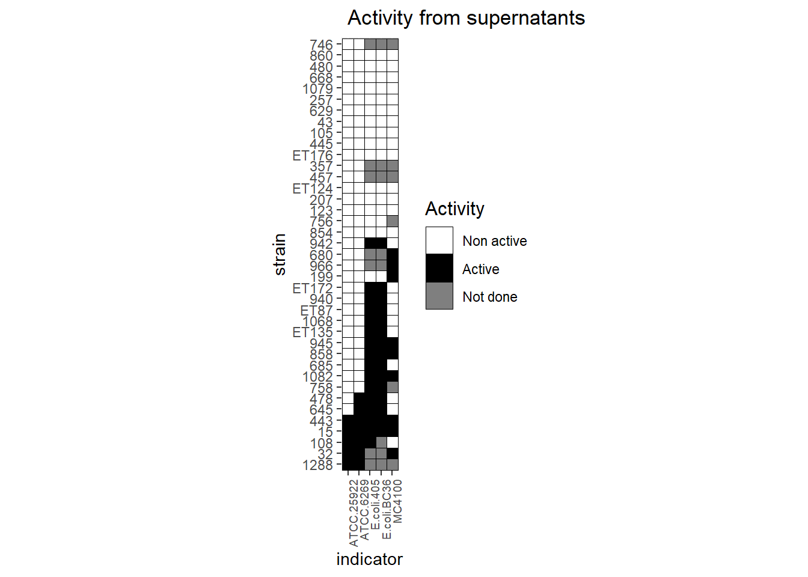
Here you will notice that the Y axis is reverted, in my case I prefer to have the strain 1288 on top of the Y axis so I just add another layer to invert it.
ggplot(tab_tm, aes(indicator, strain)) + geom_tile(aes(fill = factor(value)), colour = "black") + theme(legend.title=element_text(colour = "black", size = 12), axis.text.x = element_text(angle = 90, hjust=1, size=7)) + labs(title = " ", fill='Activity') + scale_fill_manual(values=c("white", "black", "grey"), labels= c('Non active', 'Active', 'Not done')) + coord_fixed() + scale_y_discrete(limits=rev)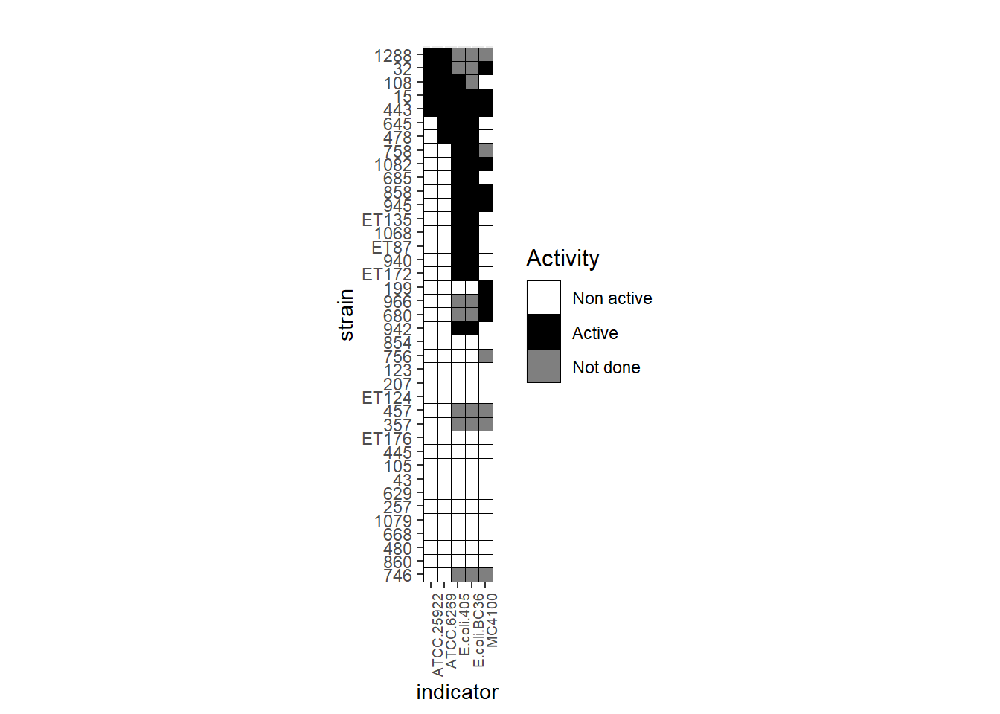
Load these packages first
library(reshape)
library(psych)
library(dplyr)
library(data.table)
library(ggplot2)
library(RSelenium)
library(tidyverse)Some Errors may Occur, check the class of your data while applying functions, some functions work only on dataframes and some work only on objects of class matrix.
dfv <- read.csv(file = "C:/Users/User/OneDrive - Université Laval/OMICS/Virulence_Analysis/EC41_Virulence_factors__presence_absence.csv")
rownames(dfv) <- dfv[,1] # assign the strains names to the rownames
dfv <- subset (dfv, select = -X) # Remove the column "-X" containing the strains names
dfv_t <- t(dfv) #transpose
rownames(dfv_t) <- colnames(dfv)
colnames(dfv_t) <- rownames(dfv)
dfv_t <- as.data.frame(dfv_t) %>% select("1288_S1", "32_S2", "108_S3", "15_S4", "443_S5", "645_S6", "478_S7", "758_S8", "1082_S9", "685_S10", "858_S11", "945_S12", "ET135_S13", "1068_S14", "ET87_S15", "940_S16", "ET172_S17", "199_S18", "966_S19", "680_S20", "942_S21", "854_S22", "756_S23", "123_S24", "207_S25", "ET124_S26", "457_S27", "357_S28", "ET176_S29", "445_S30", "105_S31", "43_S32", "629_S33", "257_S34", "1079_S35", "668_S36", "480_S37", "860_S38", "746_S39", "BC36_S40", "Kp405_S41") # reorder the data in that order
dfv_t$FV <- row.names(dfv_t)
dfv_tm <- melt(dfv_t) #Reshape package
colnames(dfv_tm) <- c("FV","Strain","value")preferred.order <- c("1288_S1", "32_S2", "108_S3", "15_S4", "443_S5", "645_S6", "478_S7", "758_S8", "1082_S9", "685_S10", "858_S11", "945_S12", "ET135_S13", "1068_S14", "ET87_S15", "940_S16", "ET172_S17", "199_S18", "966_S19", "680_S20", "942_S21", "854_S22", "756_S23", "123_S24", "207_S25", "ET124_S26", "457_S27", "357_S28", "ET176_S29", "445_S30", "105_S31", "43_S32", "629_S33", "257_S34", "1079_S35", "668_S36", "480_S37", "860_S38", "746_S39", "BC36_S40", "Kp405_S41")
ggplot(dfv_tm, aes(x=FV, y= factor(Strain, levels = preferred.order))) + geom_tile(aes(fill = factor(value)), colour = "white") + theme(legend.title=element_text(colour = "black", size = 12), axis.text.x = element_text(angle = 90, hjust=1, size=6)) + labs(title="Virulome", size = 15) + labs(x="Virulence factor",y="Strain") + labs(fill='Genotype') + scale_fill_manual(values=c("white", "black"), labels= c('Absence', 'Presence')) + scale_y_discrete(limits=rev) 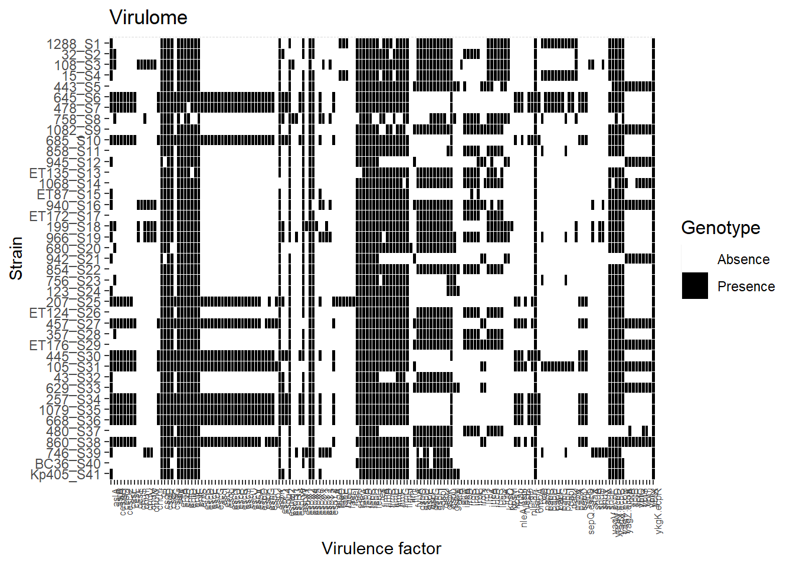
Get some stats such
#describe(dfv)
descri <- describe(dfv)
moyenne <- subset (descri, select = "mean")
moyenne$FV <- row.names(moyenne)
view(moyenne)moyenne <- moyenne[order(moyenne$mean), ]
good.order<-moyenne$FV
ggplot(moyenne, aes(x = factor(FV, levels = good.order), mean)) + geom_col() 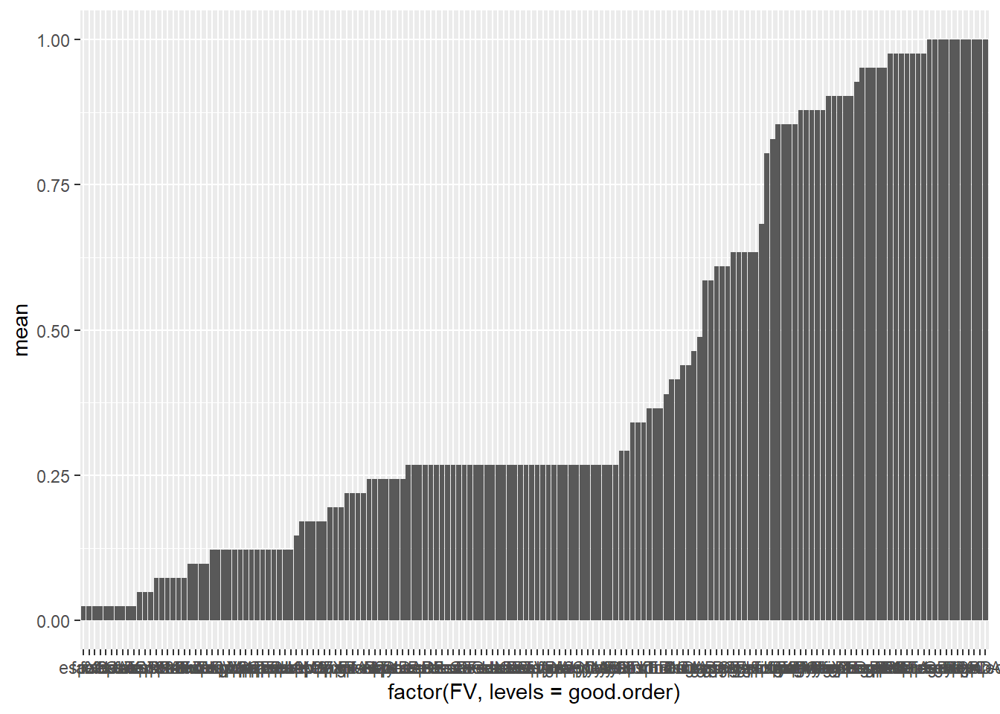
Our goal here is to visualize the resistance phenotype of the strains of our collections by assigninging the colour red to resistant strains and green to sensitive ones.
We could also assign a colour for the intermediate resistance profile, but it wont be the case here
All_df <- read.csv(file = "C:/Users/User/OneDrive - Université Laval/OMICS/Paillasse/All_Data - Copy.csv") # This file contains most of the genomic data
which(colnames(All_df) == "AM") # 306 ## [1] 306which(colnames(All_df) == "Col") #322## [1] 322df<- subset(All_df, select = c(306:322)) # I took only the columns related the antibiotic resistance profile
rownames(df) <- All_df$gene # giving my rows relevant names
df_t <- t(df) # transpose my table
rownames(df_t) <- colnames(df)
colnames(df_t) <- rownames(df)
df_t <- as.data.frame(df_t) %>% select("1288_S1", "32_S2", "108_S3", "15_S4", "443_S5", "645_S6", "478_S7", "758_S8", "1082_S9", "685_S10", "858_S11", "945_S12", "ET135_S13", "1068_S14", "ET87_S15", "940_S16", "ET172_S17", "199_S18", "966_S19", "680_S20", "942_S21", "854_S22", "756_S23", "123_S24", "207_S25", "ET124_S26", "457_S27", "357_S28", "ET176_S29", "445_S30", "105_S31", "43_S32", "629_S33", "257_S34", "1079_S35", "668_S36", "480_S37", "860_S38", "746_S39") # reorder my columns in that order
df_t<- df_t[colSums(!is.na(df_t)) > 0] # remove columns that have NA in it
df_t$ATB <- row.names(df_t) # creating "ATB" column, necessary for the melt() to work
df_tm <- melt(df_t) #Reshape package
colnames(df_tm) <- c("ATB","Strain","value") # giving relevant names to the melted table
df_tm$ATB <- factor(df_tm$ATB, levels = c("AM", "AMC", "FEP", "CTX", "FOX", "CAZ", "ATM", "ETP", "CIP", "NA.", "SXT", "C", "TE", "GM", "K", "S", "Col"))
ggplot(df_tm, aes(ATB, Strain)) + geom_tile(aes(fill = factor(value), colour = c("red","green",white) ), colour = "white") + theme(legend.title=element_text(colour = "black", size = 12), axis.text.x = element_text(angle = 45, hjust=1, size=8)) + labs(title="Antibiotic resistance Profile", size = 15) + labs(x="Antibiotic",y="strain") + labs(fill='Phenotype') + scale_fill_manual(values=c("green","red", "red"), labels= c('Sensitive', 'Resistant', 'Resistant'))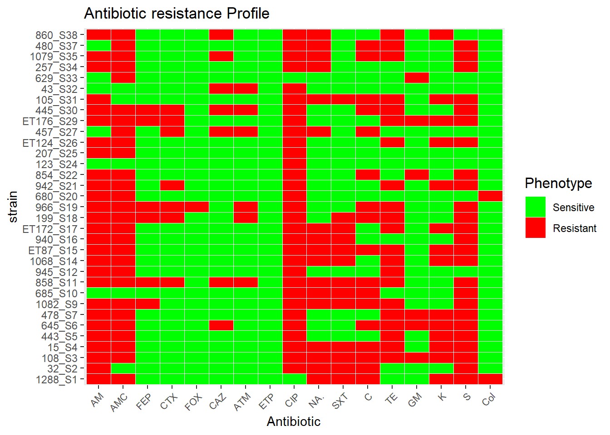
library(reshape)
library(psych)
library(dplyr)
library(data.table)
library(ggplot2)
library(RSelenium)
library(ggplot2)R_Genes <- read.csv(file = "C:/Users/User/OneDrive - Université Laval/OMICS/Résistance_Analyse/R_Genes.csv" )
rownames(R_Genes) <- R_Genes$gene
R_Genes <- subset(R_Genes, select = -c(1))
R_Genes <- subset(R_Genes, select=-c(which(colnames(R_Genes)=="BC36_S40"))) # Remove this sample
R_Genes <- subset(R_Genes, select=-c(which(colnames(R_Genes)=="Kp405_S41"))) # Remove this sample
R_Genes_t <- t(R_Genes)
R_Genes_tm <- reshape2::melt(R_Genes_t)
colnames(R_Genes_tm) <- c("strain","gene","value")
p<-ggplot(R_Genes_tm, aes(strain, gene)) + geom_tile(aes(fill = factor(value)), colour = "black") + theme(legend.title=element_text(colour = "black", size = 3), axis.text.x = element_text(angle = 90, hjust=1, size=9), axis.text.y = element_text(size = 3.5)) + labs(title="Resistomes", size = 100) + labs(x="Strains",y="Resistance genes and mutations") + labs(fill=' ', ) + scale_fill_manual(values=c("black", "red", "green"), labels= c('Absence', 'strict hit', 'perfect hit'))
p #view plot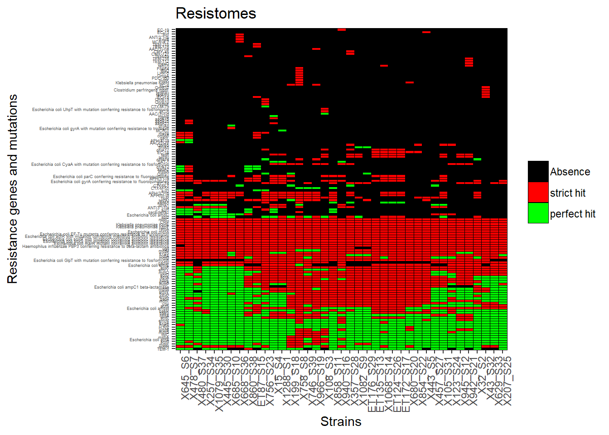
ggsave(p, path = "C:/Users/User/OneDrive - Université Laval/Article Drafts/1st article Tables and Figures/", filename = "heatmap.pdf")We want to put a custom order before redrawing the graph
good_order <- c("X1288_S1","X32_S2","X108_S3","X15_S4","X443_S5","X645_S6","X478_S7","X758_S8","X1082_S9","X685_S10","X858_S11","X945_S12","ET135_S13","X1068_S14","ET87_S15","X940_S16","ET172_S17","X199_S18","X966_S19","X680_S20","X942_S21","X854_S22","X756_S23","X123_S24","X207_S25","ET124_S26","X457_S27","X357_S28","ET176_S29","X445_S30","X105_S31","X43_S32","X629_S33","X257_S34","X1079_S35","X668_S36","X480_S37","X860_S38","X746_S39")
p1<-ggplot(R_Genes_tm, aes(x=factor(strain, levels = good_order ), gene)) + geom_tile(aes(fill = factor(value)), colour = "black") + theme(legend.title=element_text(colour = "black", size = 3), axis.text.x = element_text(angle = 90, hjust=1, size=9), axis.text.y = element_text(size = 3.5)) + labs(title="Resistomes", size = 100) + labs(x="Strains",y="Resistance genes and mutations") + labs(fill=' ', ) + scale_fill_manual(values=c("black", "red", "green"), labels= c('Absence', 'strict hit', 'perfect hit'))
p1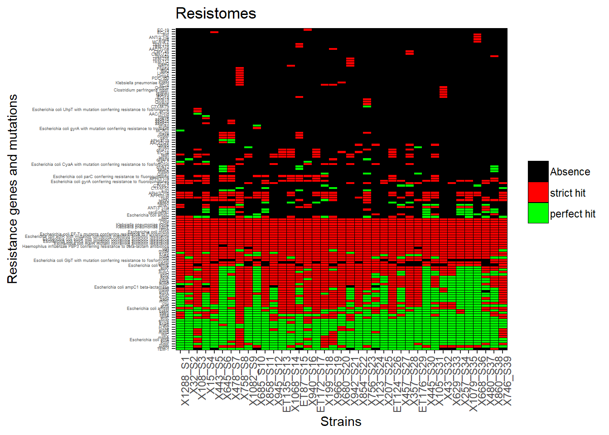
In the previous code we have been able to draw a heatmap of the strains. In the case that i want to have the Profile of each strain I have to proceed as following.
All_df <- read.csv(file = "C:/Users/User/OneDrive - Université Laval/OMICS/Paillasse/All_Data - Copy.csv") # This file contains most of the genomic data
which(colnames(All_df) == "AM") # 306 ## [1] 306which(colnames(All_df) == "Col") #322## [1] 322antibiogram<- subset(All_df, select = c(306:322)) # I took only the columns related the antibiotic resistance profile
rownames(antibiogram) <- All_df$gene # giving my rows relevant names
antibiogram<- t(antibiogram)
antibiogram <- antibiogram[, !colSums(is.na(antibiogram)), drop = FALSE]# remove columns that have NA in it
antibiogram<- t(antibiogram)return_final<-data.frame()For loop to read into matrix and then fill a new table with the resistance profile
The following lines will :
Read the table line by line with a first for loop. each line (strain) will be assigned to a temporary table “tmp”.
Subset only the columns (antibiotics) that have a value equal to 1 (resistant phenotype) and assign it to another temporary table “tmp1”.
Declare an empty string vector here called “profile”.
Fill the empty vector with the column names of the table “tmp1” that contains only column names of antibiotics to which a strain is resistant.
Fill a temporary table with the results.
Bind all the temporary tables into a final results table
data <- as.data.frame(antibiogram)
for (i in row.names(data)) {
tmp<-data[c(i),]
tmp1 <- subset(tmp, select = c(tmp==1))
nbr<- print(length(tmp1))
profile<-as.character(" ")
for (j in colnames(tmp1)){
profile<- paste0(profile,"/", print(j))
}
return_tmp <- data.frame("Strain" = i, "profile" = profile, "Resistant to" = nbr, stringsAsFactors = F)
return_final<-rbind(return_final, return_tmp)
}view(return_final)In order to keep these results
write.csv(return_final, file = "/Users/User/OneDrive - Université Laval/OMICS/Paillasse/Antibiogramme_profile.csv" )table <- describe(df)
view(table)
ggplot(table, aes(x=vars, y=mean)) + geom_bar(stat = 'identity')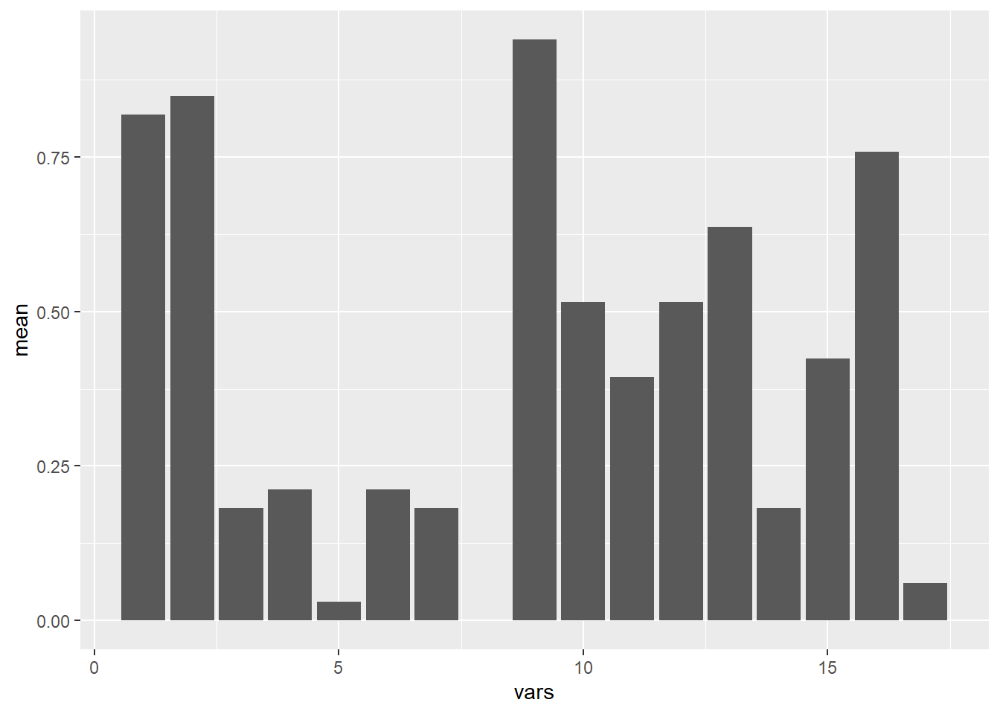
#Mapping samples origins
I want to show where my samples come from on a map
library(leaflet)
library(tmaptools)Im going to try to take GPS localisation of the samples. Try to give them different names according to the names in this server https://nominatim.openstreetmap.org/
simple<- data.frame("Samples"=preferred.order, ID= c("Nabeul", "ksour essef", "mellassine", "bou merdes", "sidi bou ali", "kemicha", "grombalia", "Gouvernorat Siliana", "Jandouba", "Gouvernorat Monastir", "Chela", "Sijoumi", "Sfax", "Mahres", "Stade Municipal Menzel Chaker", "El Habibia", "Manouba", "La Marsa", "تونس العاصمة" , "Municipalité De Beb Lakwes", "Bizerte", "Chela", "El Aouina", "mellassine", "Gouvernorat Béja", "Zaghouan", "Bir Ali Ben Khalifa", "Chela","Gouvernorat Mahdia", "Hayy Ibn Khaldun", "mellassine", "Délégation Ksour Essef", "تونس العاصمة", "Rue Ibn Charaf", "Intilaka", "Rue Touhami Amar", "Agareb", "Aïn Draham", "Rue Beb Jdid", NA, NA))
cities<- simple$ID[1:39] # cut the names of the cities and remove the last values which are NAs
query <- geocode_OSM(cities)
m <- leaflet() %>%
addTiles(urlTemplate = "https://{s}.tile.openstreetmap.org/{z}/{x}/{y}.png") %>% addMarkers(query$lon, query$lat, label = query$query, icon = makeIcon(iconUrl ="https://fanblairfarm.co.uk/wp-content/uploads/2020/11/chicken-icon-2.png", iconWidth = 17, iconHeight= 17)) m %>% addProviderTiles(providers$MtbMap) %>%
addProviderTiles(providers$Stamen.TonerLines,
options = providerTileOptions(opacity = 0.35)) %>%
addProviderTiles(providers$Stamen.TonerLabels)#Red chicken Tile, the best one until now
m <- leaflet() %>%
addTiles(urlTemplate = "https://{s}.tile.openstreetmap.org/{z}/{x}/{y}.png") %>% addMarkers(query$lon, query$lat, label = query$query, icon = makeIcon(iconUrl ="https://www.downloadclipart.net/large/chicken-png-transparent-image.png", iconWidth = 17, iconHeight= 17))
m %>% addProviderTiles(providers$Stamen.TonerLite) #best map until nowI will find this usefull to interprete my data, the thing is some of the vectors here were manually typed
library(logisticPCA)
library(ggplot2)All_df <- read.csv(file = "C:/Users/User/OneDrive - Université Laval/OMICS/Paillasse/All_Data - Copy.csv") # This file contains most of the genomic data
data<- subset(All_df, select = c(-gene))
Activity <-c(rep("Active", 21), rep("Inactive", 18))
data <- as.matrix(data) # with matrix you can have repetitive rownames
rownames(data)<- Activity
logsvd_model = logisticSVD(data, k = 2)
logsvd_model## 39 rows and 321 columns
## Rank 2 solution
##
## 53.8% of deviance explained
## 470 iterations to convergelogpca_cv = cv.lpca(data, ks = 2, ms = 1:10)
plot(logpca_cv)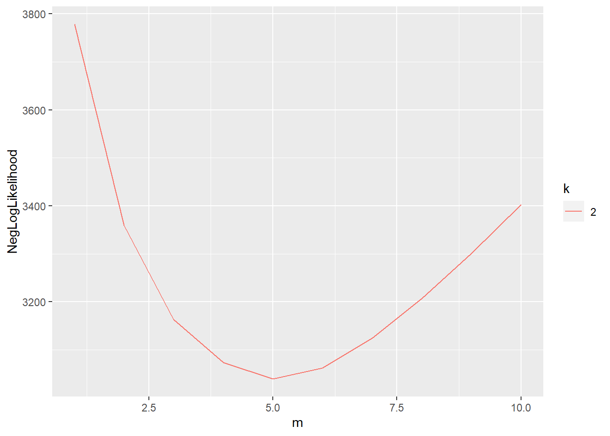
logpca_model = logisticPCA(data, k = 2, m = which.min(logpca_cv))
plot(logsvd_model, type = "trace")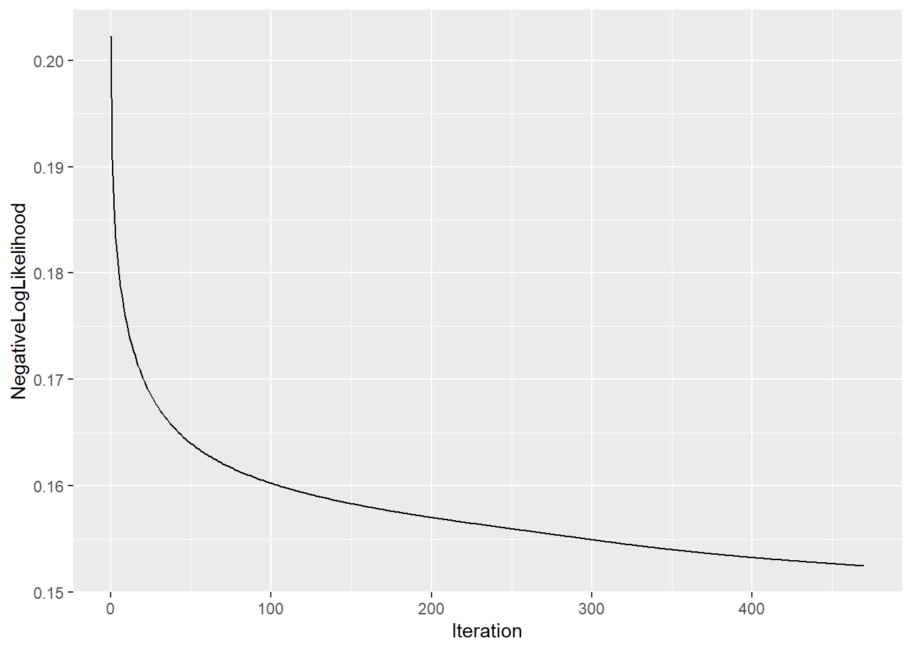
Activity<- rownames(data)
plot(logpca_model, type = "scores") + geom_point(aes(colour = Activity)) +
ggtitle("Logistic PCA") + scale_colour_manual(values = c("blue", "red")) 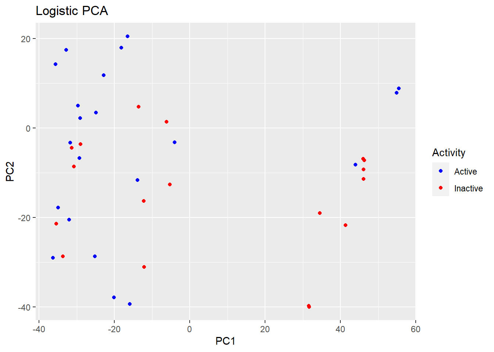
plot(logsvd_model, type = "scores") + geom_point(aes(colour = Activity)) + ggtitle("Exponential Family PCA") + scale_colour_manual(values = c("blue", "red"))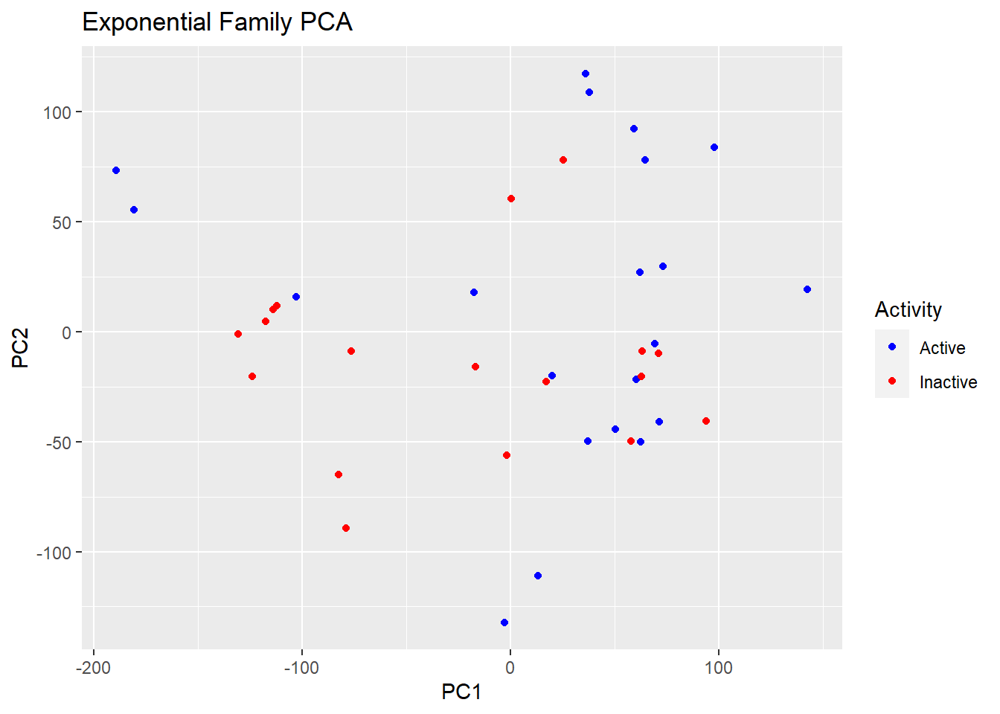
Here we will use the same model, the coordinates of the population will stay in the same place no need to redo the calculation. However we will colour the strains depending on the criterium of bacteriocin production
Mcc <- c("J25", "J25+C7+colV", "J25+colV", "J25", "J25+colV", "inactive", "inactive", "inactive", "colV", "inactive", "C7+colV", "colV", "inactive", "colV", "inactive", "colV", "colV", "inactive", "colV", "inactive", "inactive", "colV", rep("inactive", 5), rep("colV", 2), rep("inactive", 7), "colV", "inactive", "inactive")
Mcc[Mcc=="inactive"] <- "Non-producer"
Mcc[Mcc!="Non-producer"] <- "Bacteriocin producer"
plot(logsvd_model, type = "scores") + geom_point(aes(colour = Mcc)) +
ggtitle("Exponential Family PCA") + scale_colour_manual(values = c("blue", "orange"))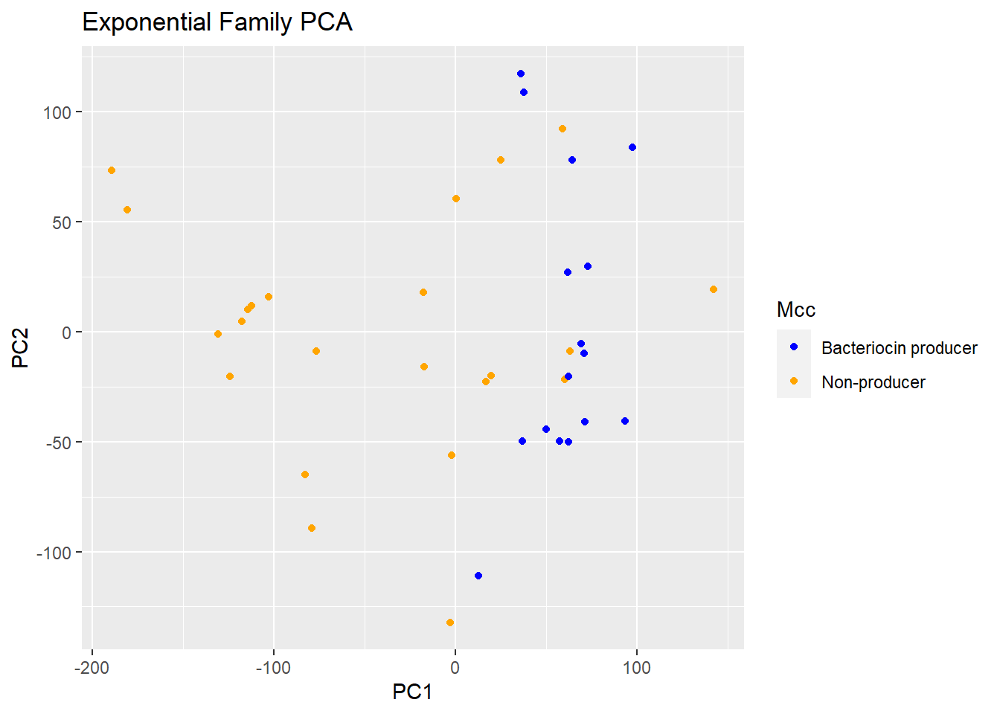
p1 <- plot(logpca_model, type = "scores") + geom_point(aes(colour = Mcc)) + ggtitle("Logistic PCA") + scale_colour_manual(values = c("blue", "orange"))
p1 #visualize the plot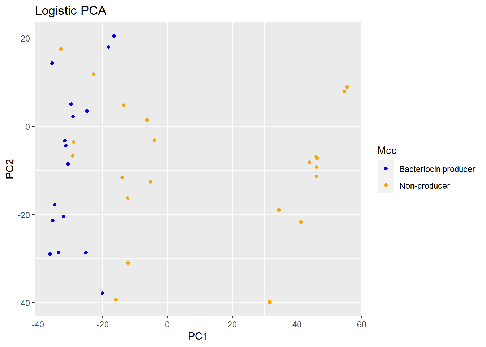
Same thing but different colours depending on the pathotype.
#Virulence<- dput(as.character(clipr::read_clip())) # very useful to copy paste a vector
Virulence<- c("APEC potential", "APEC", "APEC potential", "APEC potential", "APEC potential", "AFEC", "AFEC", "APEC", "APEC", "APEC potential", "APEC", "APEC potential", "APEC", "APEC", "APEC potential", "APEC", "APEC", "APEC potential", "APEC", "APEC potential", "APEC potential", "APEC", "APEC potential", "AFEC", "AFEC", "APEC", "AFEC", "APEC", "APEC", "AFEC", "AFEC", "AFEC", "AFEC", "AFEC", "AFEC", "AFEC",
"APEC", "AFEC", "APEC potential")
plot(logsvd_model, type = "scores") + geom_point(aes(colour = Virulence)) +
ggtitle("Exponential Family PCA") + scale_colour_manual(values = c("green", "red", "purple"))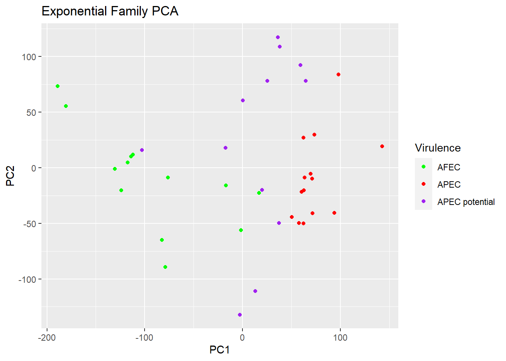
p2 <- plot(logpca_model, type = "scores") + geom_point(aes(colour = Virulence)) +
ggtitle("Logistic PCA") + scale_colour_manual(values = c("green", "red", "purple"))
p2 #visualize the plot 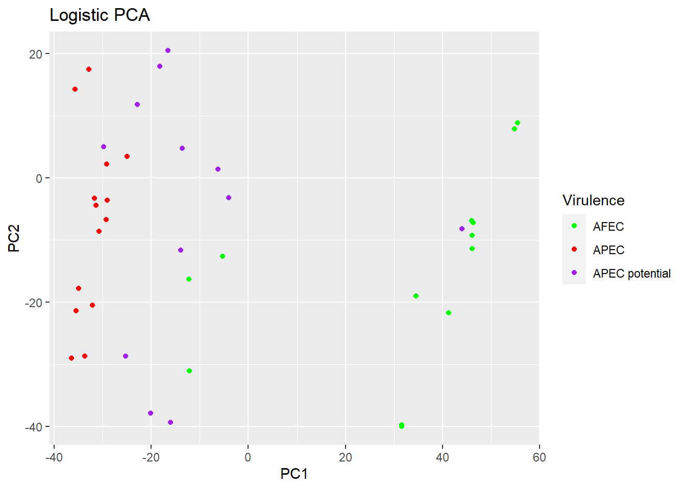
#Phylogroup <- dput(as.character(clipr::read_clip()))
Phylogroup <- c("A", "A", "F", "A", "B1", "A", "A", "B1", "B1", "A", "B1", "A", "B1", "B1", "A", "F", "B1", "B2", "D", "B1", "A", "B1", "B1", "A", "A", "B1", "A", "B1", "B1", "A", "A", "A", "A", "A", "A", "A", "A", "A", "D")
plot(logsvd_model, type = "scores") + geom_point(aes(colour = Phylogroup)) + ggtitle("Exponential Family PCA") + scale_colour_manual(values = c("green", "red", "purple", "yellow", "grey"))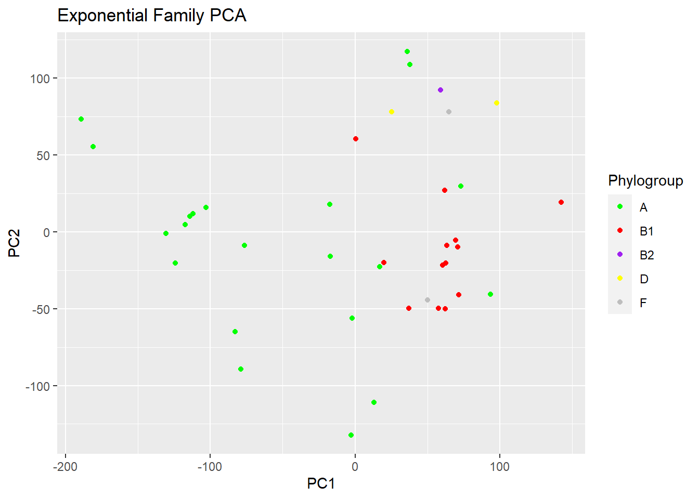
p3 <- plot(logpca_model, type = "scores") + geom_point(aes(colour = Phylogroup)) + ggtitle("Logistic PCA") + scale_colour_manual(values = c("green", "red", "purple", "yellow", "grey"))
p3 # visualize the plot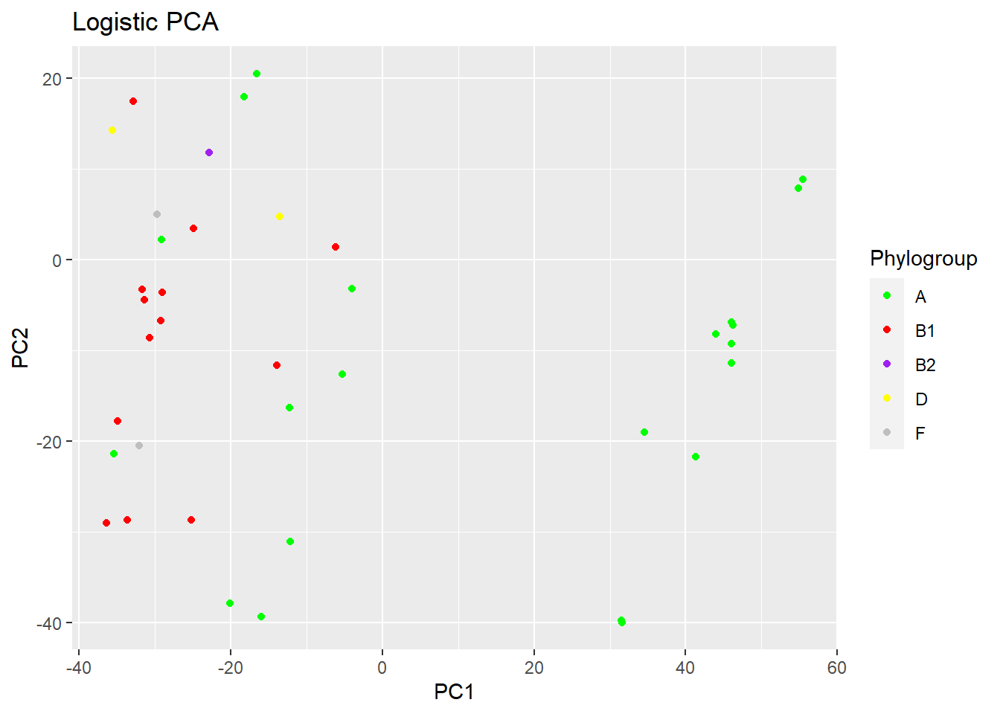
#Merging the plots
library(patchwork)
p1+p2+p3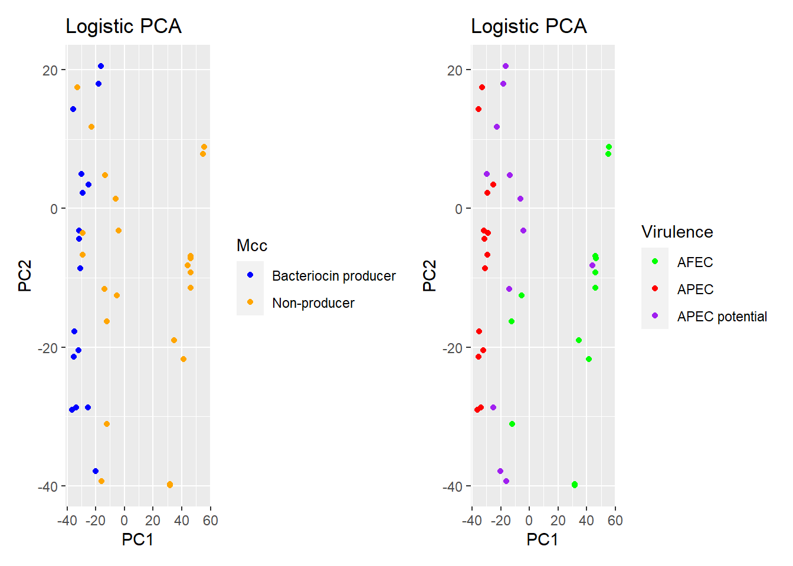
Let’s suppose that we have two tables that contain the same unique IDs, this function is usefull to merge the two tables depending on these IDs even if the rows are not ordered. Here we merge two tables data1 and data2 by their ID names
merge(x= data1, y=data2, by= "ID", all=TRUE)Here we replace all the NAs in a data by zero, easy stuff
data[is.na(data)] <- 0Here i want to calculate the pearson’s correlation coefficient between my different variables. By checking the bibliography, the cor() function should do the work. If there is a variable that takes the value 1 or 0 across all the population, we will see this Warning message : In cor(data) : the standard deviation is zero We can make a heatmap Based on that using the pheatmap package
cor_data <- cor(data)
library(pheatmap)
cor_data[is.na(cor_data)] <- 0
pheatmap::pheatmap(cor_data)So I have a Table containing some presence/absence Data of some plasmids across my genomes.
The First time that I worked with my data, i just used clipr package to get it from the clipboard, then i saved it to a file that i will read the second time.
#tb2 <-clipr::read_clip_tbl(header=TRUE)
#write.csv(tb2 , row.names = FALSE, file = "C:/Users/User/OneDrive - Université Laval/OMICS/Paillasse/Plasmids_binary.csv")
tb2 <- read.csv(file = "C:/Users/User/OneDrive - Université Laval/OMICS/Paillasse/Plasmids_binary.csv")It’s as easy as this
tb2[is.na(tb2)== TRUE]<-0library(ape)mytree<-read.tree("C:/Users/User/OneDrive - Université Laval/OMICS/Paillasse/tree.newick.txt")
mytree$tip.label # to check the edge number of the APEC strain## [1] "Sample36"
## [2] "Sample34"
## [3] "Sample30"
## [4] "Sample35"
## [5] "Sample10"
## [6] "Sample7"
## [7] "Sample6"
## [8] "Sample2"
## [9] "Sample4"
## [10] "Sample1"
## [11] "Sample31"
## [12] "Sample27"
## [13] "Sample38"
## [14] "Sample21"
## [15] "Sample12"
## [16] "Sample37"
## [17] "Sample25"
## [18] "Sample33"
## [19] "Sample32"
## [20] "Sample15"
## [21] "Sample24"
## [22] "Sample41"
## [23] "NC_000913_3_Escherichia_coli_str_K_12_substr_MG1655_fixed"
## [24] "Sample14"
## [25] "Sample13"
## [26] "Sample17"
## [27] "Sample26"
## [28] "Sample23"
## [29] "Sample11"
## [30] "Sample20"
## [31] "Sample22"
## [32] "Sample40"
## [33] "NC_020163_1_Escherichia_coli_APEC_O78_fixed"
## [34] "NC_018658_1_Escherichia_coli_O104_H4_str_2011C_3493_fixed"
## [35] "Sample9"
## [36] "Sample29"
## [37] "Sample5"
## [38] "Sample28"
## [39] "Sample8"
## [40] "Sample18"
## [41] "NC_017634_1_Escherichia_coli_O83_H1_str_NRG_857C_fixed"
## [42] "Sample3"
## [43] "Sample16"
## [44] "NC_011750_1_Escherichia_coli_IAI39_fixed"
## [45] "Sample19"
## [46] "CU928163_2_Escherichia_coli_UMN026_fixed"
## [47] "Sample39"
## [48] "NC_002695_2_Escherichia_coli_O157_H7_str_Sakai_fixed"rerootTree<- root(mytree, mytree$tip.label[33])
rerootTree$tip.label ## [1] "Sample36"
## [2] "Sample34"
## [3] "Sample30"
## [4] "Sample35"
## [5] "Sample10"
## [6] "Sample7"
## [7] "Sample6"
## [8] "Sample2"
## [9] "Sample4"
## [10] "Sample1"
## [11] "Sample31"
## [12] "Sample27"
## [13] "Sample38"
## [14] "Sample21"
## [15] "Sample12"
## [16] "Sample37"
## [17] "Sample25"
## [18] "Sample33"
## [19] "Sample32"
## [20] "Sample15"
## [21] "Sample24"
## [22] "Sample41"
## [23] "NC_000913_3_Escherichia_coli_str_K_12_substr_MG1655_fixed"
## [24] "Sample14"
## [25] "Sample13"
## [26] "Sample17"
## [27] "Sample26"
## [28] "Sample23"
## [29] "Sample11"
## [30] "Sample20"
## [31] "Sample22"
## [32] "Sample40"
## [33] "NC_020163_1_Escherichia_coli_APEC_O78_fixed"
## [34] "NC_018658_1_Escherichia_coli_O104_H4_str_2011C_3493_fixed"
## [35] "Sample9"
## [36] "Sample29"
## [37] "Sample5"
## [38] "Sample28"
## [39] "Sample8"
## [40] "Sample18"
## [41] "NC_017634_1_Escherichia_coli_O83_H1_str_NRG_857C_fixed"
## [42] "Sample3"
## [43] "Sample16"
## [44] "NC_011750_1_Escherichia_coli_IAI39_fixed"
## [45] "Sample19"
## [46] "CU928163_2_Escherichia_coli_UMN026_fixed"
## [47] "Sample39"
## [48] "NC_002695_2_Escherichia_coli_O157_H7_str_Sakai_fixed"plot(rerootTree)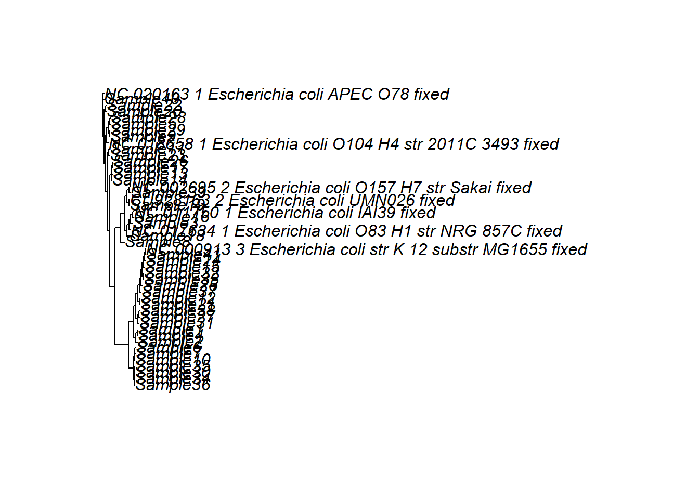
edgecol<- vector()
edgecol[1:41] = "black"
tipcol<- vector()
tipcol[1:41] = "black"
arbre <- plot.phylo(rerootTree, "tidy", main= "phylogenetic analysis based on Average nucleotide identity", edge.color = edgecol, cex = 0.6 , tip.color = tipcol, use.edge.length = FALSE, x.lim = 90) 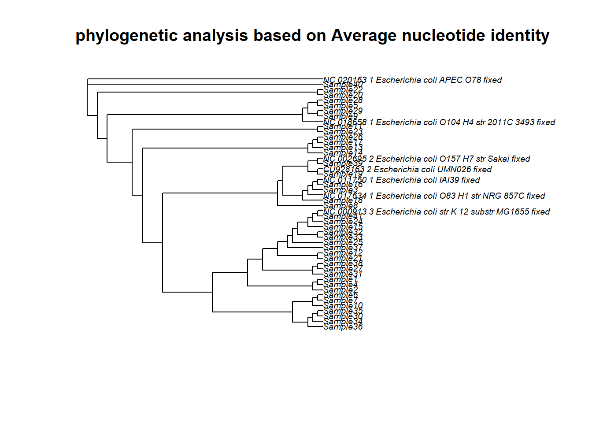
#edgelabels(font=0.5, cex=0.5)
#tiplabels(font=0.05, cex=0.5)credit goes to https://stackoverflow.com/questions/71666349/multiple-chi-square-tests-in-r
data <- read.csv(file = "C:/Users/User/OneDrive - Université Laval/OMICS/Paillasse/All_Data - Copy.csv", stringsAsFactors = TRUE) # This file contains most of the genomic data
# Identify columns with only one level as a value
cols_to_remove <- sapply(data, function(x) length(unique(x)) == 1)
#Remove columns with only one level as a value
data <- data[, !cols_to_remove]
# Split the data into response (sample) and predictor (parameter) variables
#response <- data[,1]
#predictors <- data[,2:ncol(data)]
#response <- as.factor(response) #necesary for chisq.test to work
# Use the chi-squared test to determine the association between each parameter
chi_sq_test <- data %>%
select(-gene) %>%
colnames() %>%
combn(2) %>%
t() %>%
as_tibble() %>%
rowwise %>%
mutate(chisq_test = list(
table(data[[V1]], data[[V2]]) %>% chisq.test()
),
chisq_pval = chisq_test$p.value
)
# Sort the chi-squared test statistics in descending order to determine the most discriminatory parameters
sorted_chi_sq_test <- chi_sq_test[order(chi_sq_test$chisq_pval, decreasing = FALSE), ]
# Identify the top 10 most discriminatory parameters
top_10_params <- head(sorted_chi_sq_test, 10)
# Print the top 10 most discriminatory parameters
print(top_10_params)## # A tibble: 10 × 4
## # Rowwise:
## V1 V2 chisq_test chisq_pval
## <chr> <chr> <list> <dbl>
## 1 APH.6..Id APH.3....Ib <htest> 0.00000000316
## 2 gspC gspE <htest> 0.00000000334
## 3 gspC gspF <htest> 0.00000000334
## 4 gspE gspF <htest> 0.00000000334
## 5 gspH gspI <htest> 0.00000000349
## 6 gspH gspJ <htest> 0.00000000349
## 7 gspH gspK <htest> 0.00000000349
## 8 gspI gspJ <htest> 0.00000000349
## 9 gspI gspK <htest> 0.00000000349
## 10 gspJ gspK <htest> 0.00000000349